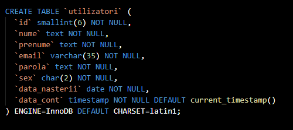
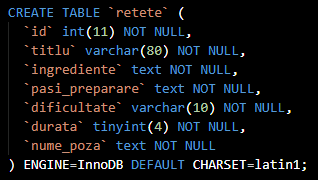
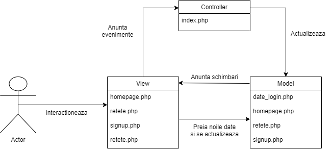

What the Food
Autori
- Marius Marin
- Andy Momita
Descrierea proiectului
What the Food este o platforma pentru pasionatii de gatit, unde utilizatorii pot cauta diverse retete culinare in functie de ingredientele pe care le au sau gradul de dificultate. De asemenea, utilizatorii pot adauga la randul lor retete proprii.
Tehnologii folosite:
- HTML
- CSS/SCSS
- php
- MySQL
Scenarii de utilizare
Ca utilizator fara cont:⦁ Posibilitatea de a vizualiza retetele curente
⦁ Posibilitatea utilizatorului de cauta retete dupa ingrediente sau dificultate
⦁ Posibilitatea utilizatorului de a se inregistra pe platforma
⦁ Posibilitatea utilizatorului de a vedea cele mai populare retete
Ca utilizator autentificat, in plus:
⦁ Posibilitatea utilizatorului de a adauga o noua reteta.
Baza de date - MySQL
Tabele
Tabela utilizatori:
Tabela retete:

Arhitectura - MVC:
Model:
• date_login.php• homepage.php
• retete.php
• signup.php
View:
• homepage.php• login.php
• retete.php
• signup.php
Controller:
• index.phpDiagrama:

References:
Ghid de utilizareProject GitHub page: https://github.com/mariusmarin98/TW2021-WhaF